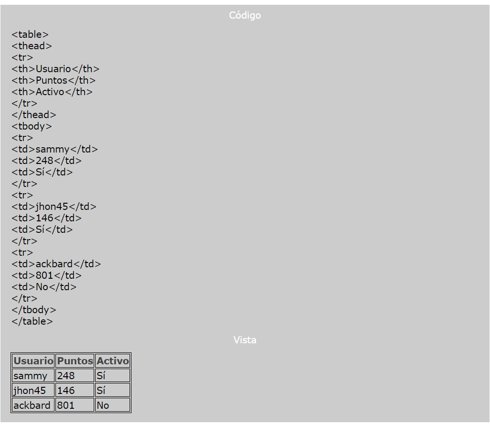
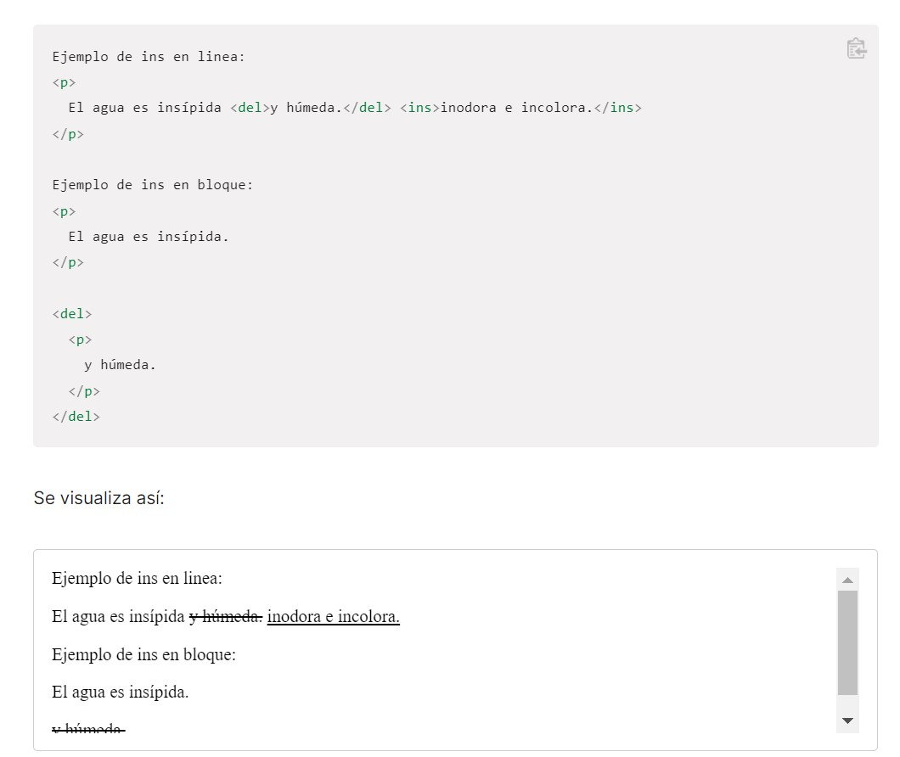
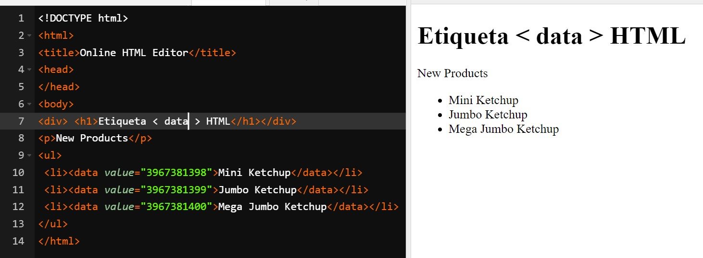
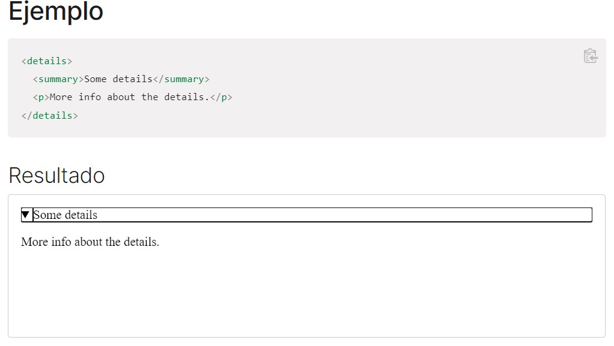
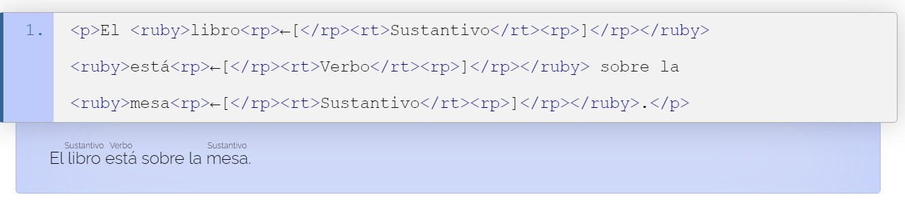

Etiquetas mas usadas en HTML
1. Nombre de la etiqueta
< body >
Descripcion
Indica la parte del cuerpo del contenido de un documento HTML. Es una etiqueta esencial para cualquier documento ya que indica donde empieza el contenido visible del documento.
Ejemplo como de como usar la etiqueta
2. Nombre de la etiqueta
< p >
Descripcion
El elemento HTML p inserta un párrafo en el documento. Los párrafos son elementos a nivel de bloque que constituyen una estructura básica de un documento y son usalmente mostrados por los navegadores con márgenes superior e inferior. Los párrafos no pueden contener elementos a nivel de bloque, incluyendo otros párrafos.
Ejemplo como de como usar la etiqueta
3. Nombre de la etiqueta
< b >
Descripcion
Indica que el texto debe ser representado con una variable bold, o negrita,de la tipografía que se esté usando.
Ejemplo como de como usar la etiqueta
4. Nombre de la etiqueta
< head >
Descripcion
provee información general (metadatos) acerca del documento,
incluyendo su título y enlaces a scripts y hojas de estilos.
Ejemplo como de como usar la etiqueta
5. Nombre de la etiqueta
< hr >
Descripcion
Representa un cambio de tema entre párrafos (por ejemplo, un cambio de escena en una historia,
un cambio de tema en una sección).
Ejemplo como de como usar la etiqueta
6. Nombre de la etiqueta
< title >
Descripcion
Define el título del documento que se muestra en un browser la barra de título o la pestaña de una página.
Solo contiene texto; las etiquetas dentro del elemento se ignoran.
Ejemplo como de como usar la etiqueta
7. Nombre de la etiqueta
< link >
Descripcion
Especifica la relación entre el documento actual y un recurso externo. Los usos posibles de este elemento incluyen la definición de un marco relacional para navegación.
Este elemento es más frecuentemente usado para enlazar hojas de estilos.
Ejemplo como de como usar la etiqueta
8. Nombre de la etiqueta
< abbr >
Descripcion
Representa una abreviación o acrónimo; el atributo opcional title puede ampliar o describir la abreviatura.
Si está presente, el atributo title debe contener la descripción completa y nada más.
Ejemplo como de como usar la etiqueta
9. Nombre de la etiqueta
< !Doctype >
Descripcion
Indica al navegador que el documento está basado en el estándar HTML5
Ejemplo como de como usar la etiqueta
10. Nombre de la etiqueta
< Html >
Descripcion
Representa la raíz de un documento HTML.
Todos los demás elementos de la estructura HTML deben ser recogidos dentro de estas etiquetas.
Ejemplo como de como usar la etiqueta
11. Nombre de la etiqueta
< head >
Descripcion
Representa una colección de metadatos acerca del documento, incluyendo enlaces a, o definiciones de, scripts y hojas de estilo.
El resto de etiquetas de metadatos, irán recogidas dentro de las etiquetas de apertura y cierre del head.
Ejemplo como de como usar la etiqueta
12. Nombre de la etiqueta
< meta >
Descripcion
Etiqueta usada para definir otros metadatos que no se pueden definir con una etiqueta HTML especifica.
Por ejemplo para definir el autor del sitio, o la descripción del mismo.
Ejemplo como de como usar la etiqueta
13. Nombre de la etiqueta
< nav >
Descripcion
Usadas para definir el contenido que será la sección de navegación de la web.
Ejemplo como de como usar la etiqueta
14. Nombre de la etiqueta
< main >
Descripcion
Se usa para definir el contenido principal del documento.
Solamente puede existir uno por documento.
Ejemplo como de como usar la etiqueta
15. Nombre de la etiqueta
< article >
Descripcion
Define contenido independiente de la web.
Ejemplo como de como usar la etiqueta
16. Nombre de la etiqueta
< aside >
Descripcion
Dentro de estas etiquetas suele alojarse el contenido adicional de la web.
Suele ser contenido relacionado con la web pero de poca importancia.
Ejemplo como de como usar la etiqueta
17. Nombre de la etiqueta
< h1 a h6 >
Descripcion
Los elementos de encabezado implementan seis niveles de encabezado del documento,
< h1 > es el más importante, y < h6 >, el menos importante.
Un elemento de encabezado describe brevemente el tema de la sección que presenta.
Ejemplo como de como usar la etiqueta
18. Nombre de la etiqueta
< footer >
Descripcion
Usadas para definir el pie de página.
Ejemplo como de como usar la etiqueta
19. Nombre de la etiqueta
< pre >
Descripcion
Usada para pegar texto manteniendo el pre formato propio del texto.
Ejemplo como de como usar la etiqueta

20. Nombre de la etiqueta
< blockquote >
Descripcion
Se usan para indicar que el contenido es texto citado.
Ejemplo como de como usar la etiqueta
21. Nombre de la etiqueta
< ol >
Descripcion
Etiquetas para crear una lista ordenada.
Ejemplo como de como usar la etiqueta
22. Nombre de la etiqueta
< ul >
Descripcion
Etiquetas para crear una lista des-ordenada
Ejemplo como de como usar la etiqueta
23. Nombre de la etiqueta
< li >
Descripcion
Etiquetas que recogen el contenido de un elemento de una
lista, sea ordenada o no.
Ejemplo como de como usar la etiqueta
24. Nombre de la etiqueta
< dl >
Descripcion
Usada para crear una lista de definiciones.
Ejemplo como de como usar la etiqueta
25. Nombre de la etiqueta
< dt >
Descripcion
Representa un término definido por la siguiente etiqueta < dd >
Ejemplo como de como usar la etiqueta

26. Nombre de la etiqueta
< dd >
Descripcion
Se usa para definir los términos listados antes que él.
Ejemplo como de como usar la etiqueta
27. Nombre de la etiqueta
< br >
Descripcion
Etiqueta utilizada para crear un salto de línea
Ejemplo como de como usar la etiqueta
28. Nombre de la etiqueta
< figure >
Descripcion
Indica una figura ilustrada como parte del documento HTML5.
Ejemplo como de como usar la etiqueta
29. Nombre de la etiqueta
< figcaption >
Descripcion
Utilizada para definir la leyenda de una figura.
Ejemplo como de como usar la etiqueta
30. Nombre de la etiqueta
< div >
Descripcion
Etiqueta común utilizada para crear un contenedor genérico.
Ejemplo como de como usar la etiqueta
31. Nombre de la etiqueta
< a >
Descripcion
rea un enlace a otras páginas de internet, archivos o ubicaciones dentro
de la misma página, direcciones de correo, o cualquier otra URL.
Ejemplo como de como usar la etiqueta
32. Nombre de la etiqueta
< strong >
Descripcion
El elemento strong es el apropiado para marcar con especial énfasis las
partes más importantes de un texto.
Ejemplo como de como usar la etiqueta
33. Nombre de la etiqueta
< small >
Descripcion
Hace el tamaño del texto una talla más pequeña (por ejemplo, de largo a mediano,
o de pequeño a extra pequeño) que el tamaño mínimo de fuente del navegador.
Ejemplo como de como usar la etiqueta
34. Nombre de la etiqueta
< sub >
Descripcion
Define un fragmento de texto que se debe mostrar, por razones tipográficas, más bajo, y
generalmente más pequeño, que el tramo principal del texto, es decir, en subíndice.
Ejemplo como de como usar la etiqueta
35. Nombre de la etiqueta
< mark >
Descripcion
representa un texto marcado o resaltado como referencia o anotación, debido a su relevancia
o importancia en un contexto particular.
Ejemplo como de como usar la etiqueta
36. Nombre de la etiqueta
< span >
Descripcion
Es un contenedor en línea. Sirve para aplicar estilo al texto o agrupar elementos en línea.
Ejemplo como de como usar la etiqueta
37. Nombre de la etiqueta
< img >
Descripcion
Representa una imagen en el documento.
Ejemplo como de como usar la etiqueta
38. Nombre de la etiqueta
< iframe >
Descripcion
Representa un contexto de navegación anidado, el cual permite incrustrar
otra página HTML en la página actual.
Ejemplo como de como usar la etiqueta
39. Nombre de la etiqueta
< embed >
Descripcion
Representa un punto de integración para una aplicación externa o de contenido interactivo (en otras palabras, un plug-in).
Ejemplo como de como usar la etiqueta
40. Nombre de la etiqueta
< object >
Descripcion
Representa un recurso externo, que puede ser tratado como una imagen, un contexto de navegación
anidado, o como un recurso que debe ser manejado por un plugin.
Ejemplo como de como usar la etiqueta
41. Nombre de la etiqueta
< video >
Descripcion
Se utiliza para incrustar vídeos en un documento HTML o XHTML.
Ejemplo como de como usar la etiqueta
42. Nombre de la etiqueta
< audio >
Descripcion
Se usa para insertar contenido de audio en un documento HTML o XHTML.
El elemento audio se agregó como parte de HTML 5.
Ejemplo como de como usar la etiqueta
43. Nombre de la etiqueta
< source >
Descripcion
Especifica recursos de medios múltiples para los elementos < picture >, < audio >, o < video >.
Es un elemento vacío. Normalmente se utiliza para servir el mismo contenido multimedia en varios formatos soportados por diferentes navegadores (en-US).
Ejemplo como de como usar la etiqueta
44. Nombre de la etiqueta
< svg >
Descripcion
es un contenedor que define un nuevo sistema de coordenadas y viewport (en-US).
Es usado como el elemento más externo de cualquier documento SVG, pero también puede
ser usado para agregar un fragmento de un SVG dentro de un documento SVG o HTML.
Ejemplo como de como usar la etiqueta
45. Nombre de la etiqueta
< table >
Descripcion
Representa datos en dos o mas dimensiones.
Ejemplo como de como usar la etiqueta
46. Nombre de la etiqueta
< caption >
Descripcion
Es el encargado de darle un título descriptivo a las tablas.
Ejemplo como de como usar la etiqueta
47. Nombre de la etiqueta
< colgroup >
Descripcion
colgroup de column group = Grupo de columnas. Permite crear grupos de columnas
Ejemplo como de como usar la etiqueta
48. Nombre de la etiqueta
< col >
Descripcion
Permite especificar propiedades para una columna o un grupo de ellas.
Ejemplo como de como usar la etiqueta
49. Nombre de la etiqueta
< tbody >
Descripcion
Usada para describir los datos concretos de una tabla.
Ejemplo como de como usar la etiqueta
50. Nombre de la etiqueta
< thead >
Descripcion
Indica el bloque de filas que describen las etiquetas de las columnas de la tabla.
Ejemplo como de como usar la etiqueta

51. Nombre de la etiqueta
< tfoot >
Descripcion
Indica los bloques de filas que describen los
resúmenes, o datos totales de una columna de una tabla.
Ejemplo como de como usar la etiqueta

52. Nombre de la etiqueta
< tr >
Descripcion
Se usa para indicar una fila de celdas de una tabla.
Ejemplo como de como usar la etiqueta
53. Nombre de la etiqueta
< td >
Descripcion
Usada para definir una celda de una tabla.
Ejemplo como de como usar la etiqueta
54. Nombre de la etiqueta
< th >
Descripcion
Etiqueta que se usa para definir el encabezado de una celda
Ejemplo como de como usar la etiqueta
55. Nombre de la etiqueta
< form >
Descripcion
Etiqueta de apertura y cierre de un formulario de una página web.
El resto de etiquetas de formulario deben ir siempre recogidas entre
estas etiquetas de apertura y cierre de formulario.
Ejemplo como de como usar la etiqueta
56. Nombre de la etiqueta
< fielset >
Descripcion
Etiqueta que representa un conjunto o agrupación de elementos de un formulario.
«Pinta» un recuadro alrededor de las etiquetas que estén contenidas dentro del < fieldset >
Ejemplo como de como usar la etiqueta
57. Nombre de la etiqueta
< legend >
Descripcion
Etiqueta ligada a < fieldset >. Indica el título del < fieldset >
Ejemplo como de como usar la etiqueta
58. Nombre de la etiqueta
< label >
Descripcion
Se usa para definir el nombre o título de un control del formulario.
Ejemplo como de como usar la etiqueta
59. Nombre de la etiqueta
< input >
Descripcion
Pinta un campo de introducción de datos para el usuario. Es de las principales etiquetas de un formulario.
Ejemplo como de como usar la etiqueta
60. Nombre de la etiqueta
< button >
Descripcion
Etiqueta utilizada para representar un botón en el formulario.
Ejemplo como de como usar la etiqueta
61. Nombre de la etiqueta
< select >
Descripcion
Input que permite una selección entre un conjunto de opciones.
Ejemplo como de como usar la etiqueta
62. Nombre de la etiqueta
< option >
Descripcion
Etiqueta ligada a < select >. Permite añadir diferentes opciones al < select >
Ejemplo como de como usar la etiqueta
63. Nombre de la etiqueta
< textarea >
Descripcion
Añade un campo al usuario para que pueda introducir texto en unas líneas máximas de texto
que el desarrollador puede definir.
Ejemplo como de como usar la etiqueta
64. Nombre de la etiqueta
< cite >
Descripcion
Marca una referencia a una fuente, o el autor de un texto citado.
Ejemplo como de como usar la etiqueta
65. Nombre de la etiqueta
< time >
Descripcion
representa un periodo específico en el tiempo. Puede incluir el atributo datetime para
convertir las fechas en un formato interno legible por un ordenador, permitiendo
mejores resultados en los motores de búsqueda o características
personalizadas como recordatorios.
Ejemplo como de como usar la etiqueta
66. Nombre de la etiqueta
< code >
Descripcion
Es el apropiado para marcar el código de un programa.
Ejemplo como de como usar la etiqueta
67. Nombre de la etiqueta
< datalist >
Descripcion
Contiene un conjunto de elementos < option > que representan los valores
disponibles para otros controles.
Ejemplo como de como usar la etiqueta
68. Nombre de la etiqueta
< del >
Descripcion
El elemento del (deleted-borrado) marca las partes de un texto o documento que han sido
suprimidas o sustituidas.
Ejemplo como de como usar la etiqueta

69. Nombre de la etiqueta
< dfn >
Descripcion
Sirve para marcar el término que se quiere definir.
Ejemplo como de como usar la etiqueta
70. Nombre de la etiqueta
< dialog >
Descripcion
El elemento HTML < dialog > representa una caja de diálogo u otro componente interactivo, como
inspector o ventana.
Ejemplo como de como usar la etiqueta
71. Nombre de la etiqueta
< i >
Descripcion
Muestra el texto marcado con un estilo en cursiva o italica.
Ejemplo como de como usar la etiqueta
72. Nombre de la etiqueta
< menu >
Descripcion
El elemento HTML < menu > se describe en la especificación HTML como una
alternativa semántica a < ul >, pero los navegadores lo tratan
(y lo exponen a través del árbol de accesibilidad) como no diferente de < ul >.
Representa una lista desordenada de elementos (que están representados por elementos < li >).
Ejemplo como de como usar la etiqueta
73. Nombre de la etiqueta
< output >
Descripcion
La etiqueta < output > es un elemento en el que se inyecta el resultado de un
cálculo después de la acción del usuario.
Ejemplo como de como usar la etiqueta
74. Nombre de la etiqueta
< progress >
Descripcion
La etiqueta HTML < progress > se utiliza para visualizar el progreso de una tarea.
Aunque los detalles de como se muestran depende directamente del navegador que
utiliza el cliente, aunque básicamente aparece una barra de progreso.
Ejemplo como de como usar la etiqueta
75. Nombre de la etiqueta
< sup >
Descripcion
Define un fragmento de texto que se debe mostrar, por razones tipográficas, más bajo,
y generalmente más pequeño, que el tramo principal del texto, es decir, en subíndice.
Ejemplo como de como usar la etiqueta
76. Nombre de la etiqueta
< base >
Descripcion
Especifica la dirección URL base que se utilizará para todas las direcciones URL
relativas contenidas dentro de un documento. Sólo puede haber un elemento < base > en
un documento.
Ejemplo como de como usar la etiqueta
77. Nombre de la etiqueta
< section >
Descripcion
Representa una sección genérica de un documento. Sirve para determinar qué contenido
corresponde a qué parte de un esquema. Piensa en el esquema como en el índice de
contenido de un libro; un tema común y subsecciones relacionadas.
Ejemplo como de como usar la etiqueta
78. Nombre de la etiqueta
< address >
Descripcion
Aporta información de contacto para su < article > más cercano o ancestro < body >;
en el último caso lo aplica a todo el documento.
Ejemplo como de como usar la etiqueta
79. Nombre de la etiqueta
< wbr >
Descripcion
Representa una posición dentro del texto donde el explorador puede
opcionalmente saltar una línea , aunque sus reglas de salto de línea
de otra manera no crearían un salto en esa posición.
Ejemplo como de como usar la etiqueta
80. Nombre de la etiqueta
< em >
Descripcion
Es el apropiado para marcar con énfasis las partes importantes de un texto.
El elemento < em > puede ser anidado, con cada nivel de anidamiento indicando un mayor grado de énfasis.
Ejemplo como de como usar la etiqueta
81. Nombre de la etiqueta
< data >
Descripcion
Vincula un contenido dado con una traducción legible por una máquina.
Si el contenido está relacionado con time- o date-, debe usarse el elemento < time >.
Ejemplo como de como usar la etiqueta

82. Nombre de la etiqueta
< samp >
Descripcion
Se utiliza para incluir texto en línea que representa una muestra (o cita)
de la salida de un programa de ordenador. El contenido de esta etiqueta
es renderizado generalmente usando la tipografía monoespaciada por defecto del navegador.
Ejemplo como de como usar la etiqueta
83. Nombre de la etiqueta
< bdo >
Descripcion
bdo Bi-Directional Overriding=Anulación de bidireccionalidad.
La dirección de escritura del texto está relacionada con el idioma y se
declara con el atributo dir. Pero en ocasiones esto no es suficiente,
entonces entra en juego el elemento bdo (anulación del algoritmo bidireccional) que al anular
el algoritmo permite un control total de la direccionalidad.
Ejemplo como de como usar la etiqueta
84. Nombre de la etiqueta
< bdi >
Descripcion
Elemento de aislamiento Bi-Direccional aisla un trozo de texto para que pueda
ser formateado con una dirección diferente al texto que hay fuera de él.
Ejemplo como de como usar la etiqueta
85. Nombre de la etiqueta
< ins >
Descripcion
Marca las partes de un texto que han sido añadidos al documento.
Ejemplo como de como usar la etiqueta
86. Nombre de la etiqueta
< param >
Descripcion
Permite especificar parámetros de ejecución para un objeto.
Ejemplo como de como usar la etiqueta

87. Nombre de la etiqueta
< optgroup >
Descripcion
Permite a los autores agrupar opciones (elemento HTML option) en una lista de opciones
(elemento HTML select). Un título es usualmente mostrado encima de las opciones
contenidas por este elemento.
Ejemplo como de como usar la etiqueta

88. Nombre de la etiqueta
< details >
Descripcion
Es usado como un widget de revelación a través del cual el usuario puede
obtener información adicional.
Ejemplo como de como usar la etiqueta

89. Nombre de la etiqueta
< scritp >
Descripcion
El elemento HTML script es usado para insertar códigos de scripts del lado cliente en
un documento. Esto puede ser logrado de dos formas: insertando el código directamente
como contenido de este elemento o refiriéndose a un archivo externo a través del
atributo "src", que contenga el código del script.
Ejemplo como de como usar la etiqueta
90. Nombre de la etiqueta
< noscript >
Descripcion
Aporta contenidos alternativos al elemento script. las aplicaciones de usuario que no
soporten scripts deben mostrar en su lugar el contenido de este elemento.
Ejemplo como de como usar la etiqueta
91. Nombre de la etiqueta
< slot >
Descripcion
Parte de la suite tecnologica Web Components — es un placeholder en un componente que tu
puedes llenar con tu propio marcado, que te permite crear árboles DOM
por separado y presentarlos juntos.
Ejemplo como de como usar la etiqueta
92. Nombre de la etiqueta
< canvas >
Descripcion
Se puede utilizar para dibujar gráficos a través de secuencias de comandos
(por lo general JavaScript ). Por ejemplo, puede usarse para dibujar
gráficos, hacer composiciones de fotos o incluso realizar animaciones.
Ejemplo como de como usar la etiqueta
93. Nombre de la etiqueta
< ruby >
Descripcion
Es una de las menos conocidas y utilizadas sobre todo en Occidente.
Esto se debe a que se utiliza sobre todo en idiomas asiáticos.
Ejemplo como de como usar la etiqueta
94. Nombre de la etiqueta
< rp >
Descripcion
Provee los medios para ocurtar información en anotaciones ruby ( ruby ). El principal
propósito de este elemento es el de hacer que ruby se más compatible, especialmente debido al
soporte parcial provisto por los navegadores.
Ejemplo como de como usar la etiqueta

95. Nombre de la etiqueta
< meter >
Descripcion
Define una medida escalar dentro de un rango conocido, o un valor fraccionario.
Esto también se conoce como un indicador. Nota: La etiqueta < meter > no se debe
utilizar para indicar el progreso (como en una barra de progreso). Para las barras de progreso,
utilice la etiqueta < progress >.
Ejemplo como de como usar la etiqueta
96. Nombre de la etiqueta
< u >
Descripcion
Muestra el texto subrayado.
Ejemplo como de como usar la etiqueta
97. Nombre de la etiqueta
< s >
Descripcion
Muestra el texto tachado con una linea horizontal.
Ejemplo como de como usar la etiqueta
98. Nombre de la etiqueta
< summary >
Descripcion
Representa un resumen, título o etiqueta para los contenidos de un elemento details .
La descripción provista por este elemento será mostrada encima de los contenidos del
elemento details para el cual ha sido declarado.
Ejemplo como de como usar la etiqueta
99. Nombre de la etiqueta
< tt >
Descripcion
Muestra el texto marcado con una fuente de ancho fijo.
Ejemplo como de como usar la etiqueta
100. Nombre de la etiqueta
< kbd >
Descripcion
Marca el texto que debe introducir el usuario.
Ejemplo como de como usar la etiqueta